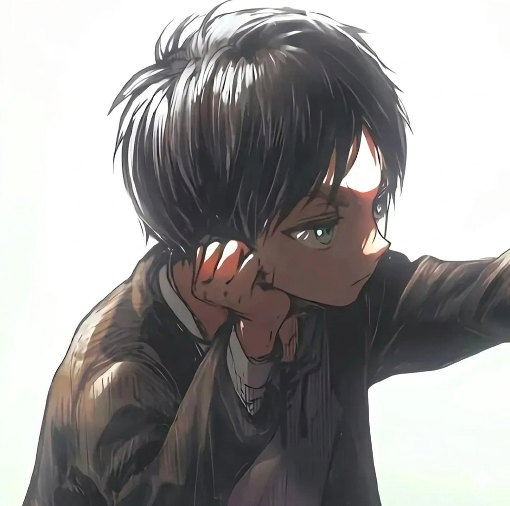
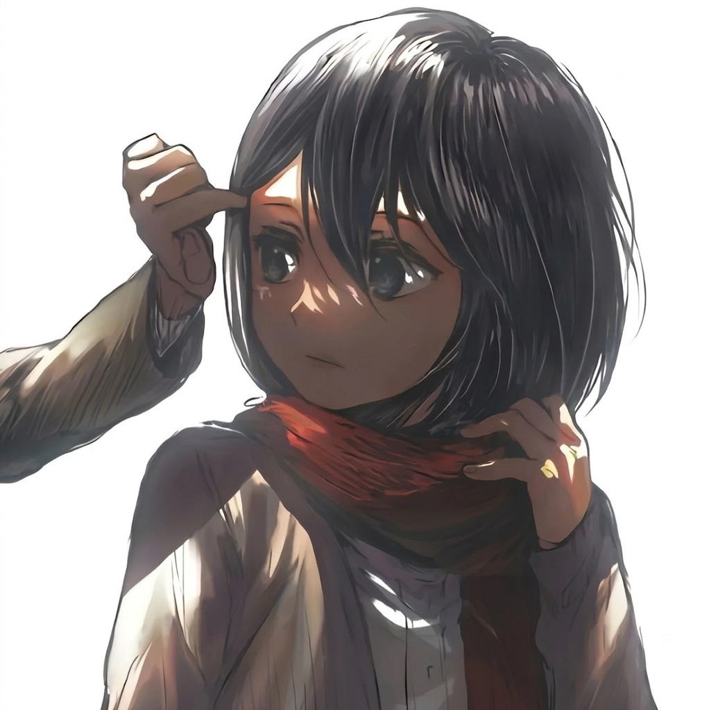

2 Months of Chaos & Love
Every second was worth it...
The Spark ✨
"Out of a million swipes and endless scrolls, our humor aligned, but it was our hearts that truly connected. What started as sharing memes and silly banter quickly turned into late-night conversations I couldn't sleep without. Within just two weeks, you didn't just become a habit—you became my favorite part of the day."
The Confession ❤️
The day I stopped holding back and let my heart speak. I confessed everything I felt for you, vulnerable but certain. With your sweet 'yes,' a beautiful chapter began. They say when your time comes and your vision gets blurry in those final moments, your entire life flashes before your eyes for seven minutes... "As everything fades out and my vision blurs, I just want your face to be the last thing that stays clear". Thank you for giving me someone incredibly special to hold onto forever.
The Twist & Test ⛈️
Our first storm. We were supposed to meet, but fate had other plans when things got complicated at home. For a moment, the silence felt heavy, and I feared losing what we had built. But true love doesn't fade under pressure; it waits. When your call finally came through, it proved that no matter the distance or the hurdles, we are meant to find our way back to each other.
The Reality 🗺️
"The day our digital world finally dissolved into beautiful reality. I still smile thinking about how incredibly nervous I was showing up with a box of Maggi which prepared the way u like , carefully picked earrings, and a bracelet, wondering if everything would be perfect. But the moment I stood face-to-face with you and looked into your eyes, all the chaos in my head just quieted down. Seeing you right there in front of me made every single obstacle, every sleepless night, and every second of waiting entirely worth it."
Before you go, I have one last secret for you...
Click below to step inside my mind and see the melody that has been playing on loop ever since .